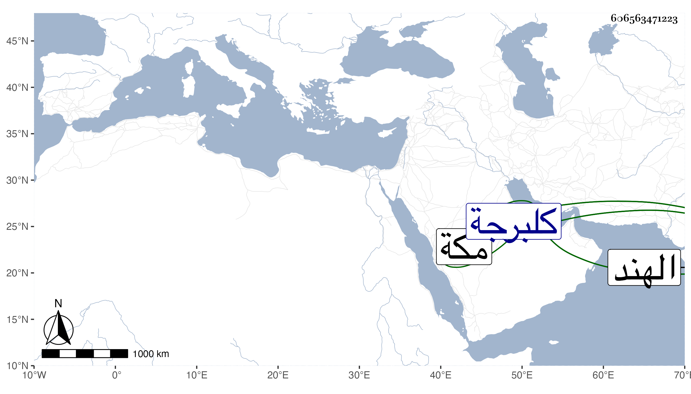

0902Sakhawi.DawLamic.ITO20230111-ara1.EIS1600.606563471223
Biography ID: 606563471223
أحمد شاه بن أحمد شاه بن حسن شاه بن بهمن شاه شهاب الدين أبو المغازي وبخط العيني أبو المعالي والأول أثبت صاحب كلبرجة وما والاها من بلاد الهند دام في المملكة نحو أربع عشرة سنة وكان أجل ملوك الهند دينا وخيرا وعزما وحزما أنشأ بمكة رباطا هائلا مع صدقات وبر وأفضال . مات في رجب سنة ثمان وثلاثين واستقر في ملك كلبرجة ابنه ظفر شاه واسمه أحمد أيضا . وينظر أحمد بن أحمد ابن فندوكاس وقد طول المقريزي في عقوده .
